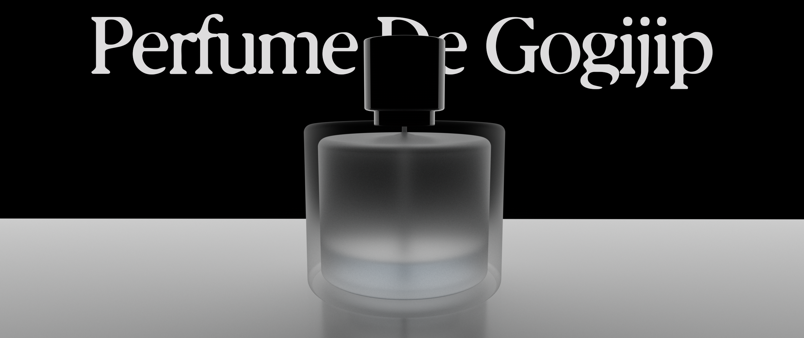
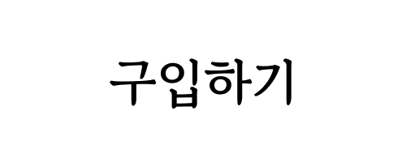
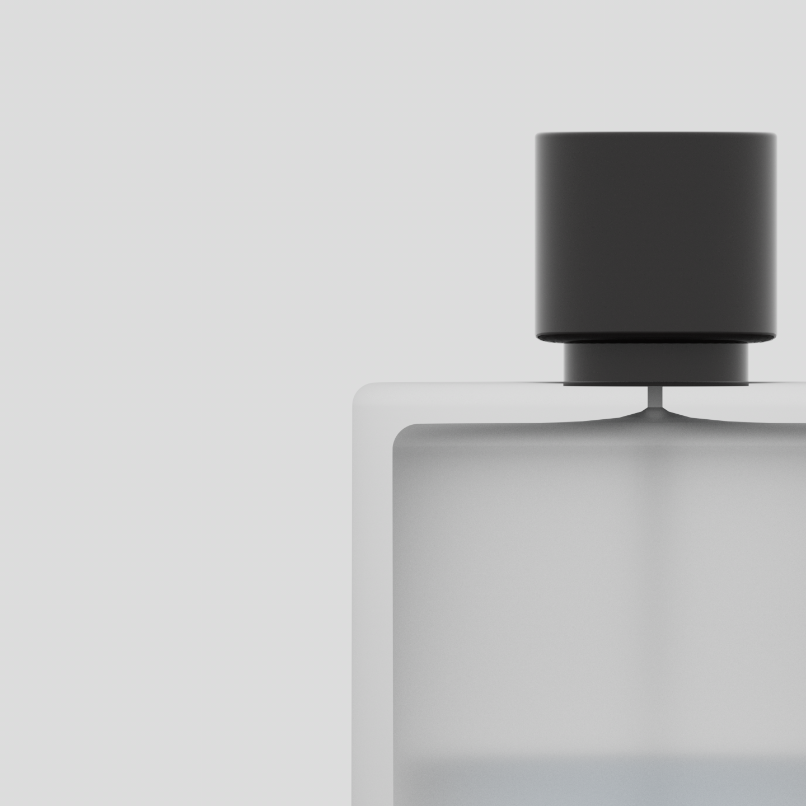
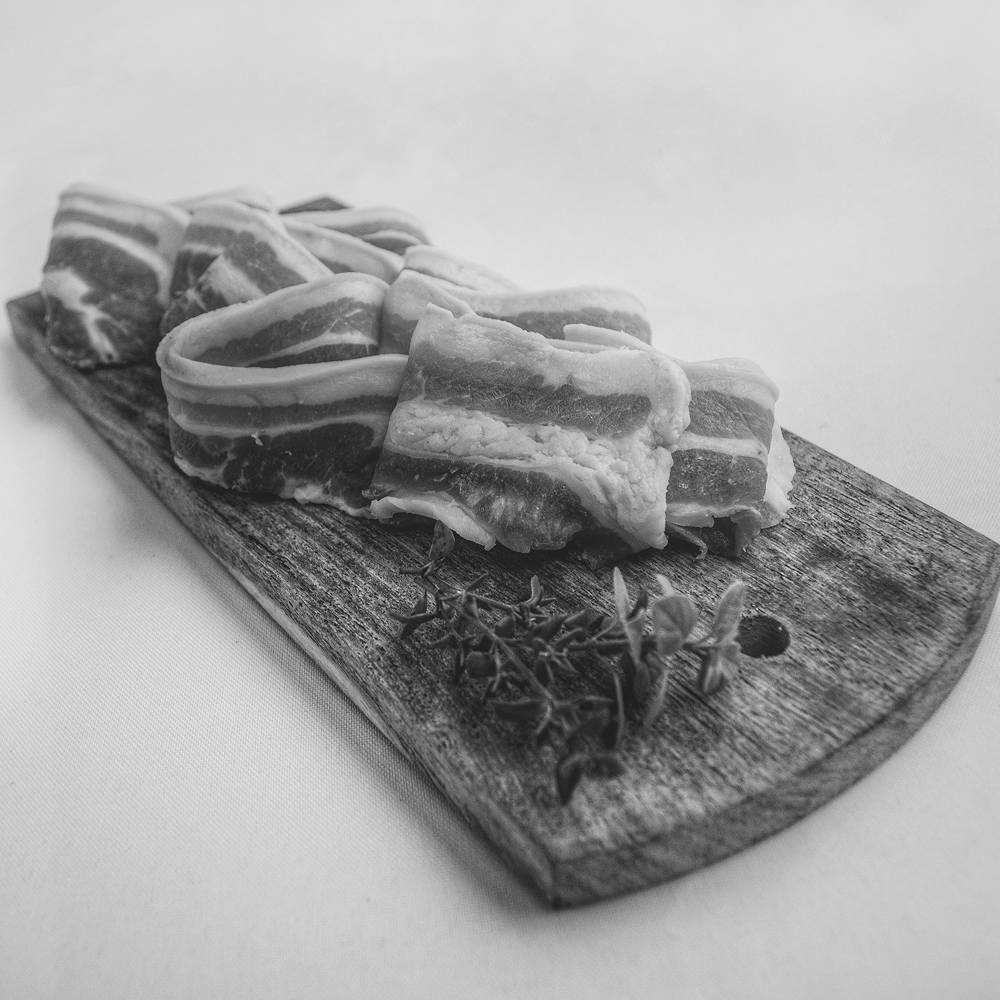
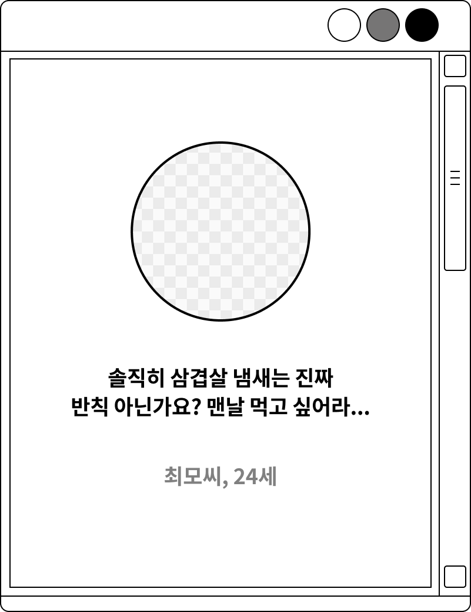
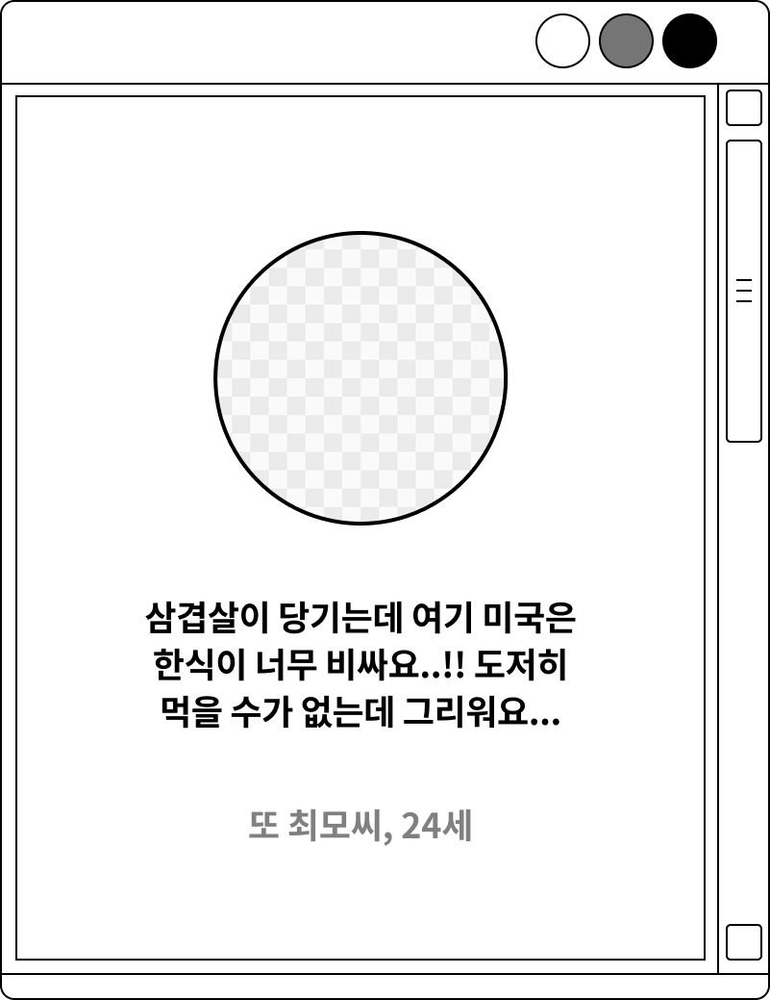
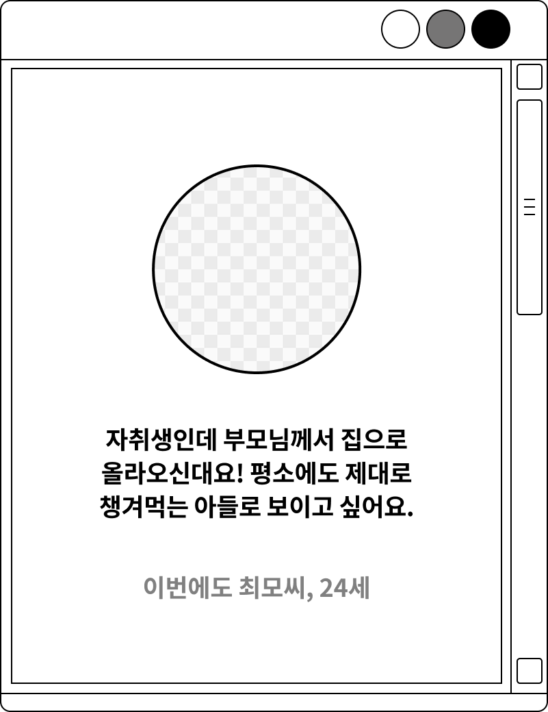
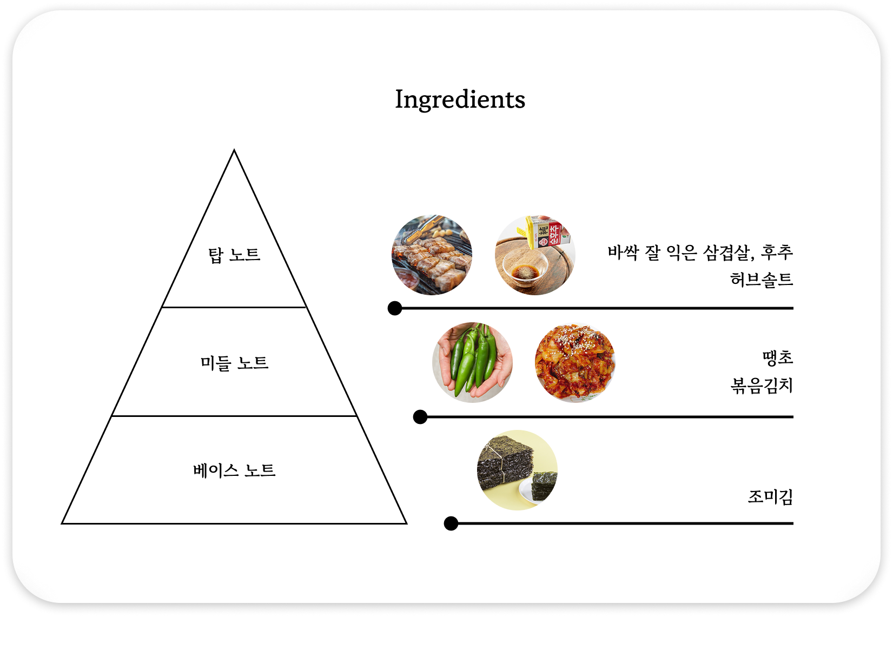
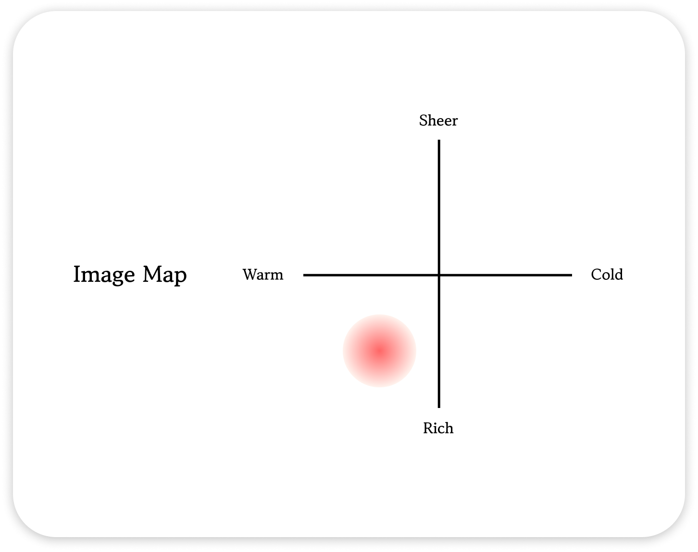

고깃집의 그 삼겹살 향을 당신에게

39,900원부터
30ml 기준
먹어도 먹어도 질리지 않는 삼겹살은 항상 배신을 하지 않죠. 식욕을 자극하는 돼지고기 굽는 향을 맡다가
문득 이런 생각 해보신 적 있나요? 아, 이거 향수로 만들어서 계속 맡고싶다! 걱정 마세요, 그 생각 여러분만 하고있던 것이
아니랍니다! 이제 Perfume De Gogijip이 제안하는 오마카세급 완벽한 삼겹정식 향으로 24시간
고깃집에 있는 듯한 분위기를 즐겨보세요!

About PDG
지글거리는 소리와 함께 피어 오르던 황금빛 풍미. 코 끝을 간지럽히던 매혹적인 스모키함. 지인들과, 가족들과, 때로는 혼자서 즐기던 행복했던 식사의 순간들. 그 모든 기억을 향기로 담아내고 싶었습니다.
익숙함의 경계를 넘어선 대담한 시도를 이 한 병에. 당신의 개성을 가장 우아하게 드러낼, 유일무이한 시그니처 향입니다.
향수는 단순한 향기가 아닙니다. 그것은 당신의 개성을 표현하는 예술입니다. Perfume De Gogijip은 당신의 매력을 한층 더 돋보이게 해줄 것입니다. 고깃집의 향기를 담은 이 특별한 향수로, 당신의 존재감을 더욱 빛내보세요.



소비자들의 의견
이렇게나! 삼겹살의 향을 항상 품고싶은 분들이 많습니다.



Creative Director of Perfume De Gogijip
Granny. YorkGaeng
욕쟁이 할머니
"야 이 옘X할 썩을 놈들아 빨리 외상값 안 갚아?!"
5공 이래 을지로 조흥은행 옆집에서 삼겹살집을 운영해온 욕쟁이 할머니, 그녀의 거칠지만 정감있는 화법과 푸짐한 손은 우리네 가장들을 항상 위로해왔습니다. 현재 은퇴 후, Perfume De Gogijip의 크리에이티브 디렉터로서 향수의 향을 직접 개발하고 있습니다. 그녀의 손길이 닿은 향수는 그 어떤 향수보다도 진정한 고깃집의 향을 담고 있습니다.

향수를 뿌리자마자 가장 먼저 느껴지는 향은, 불판 위에서 노릇하게 구워지는 삼겹살의 고소하고 기름진 냄새와 같으며 톡 쏘는 후추향과 허브솔트의 짭짤하고 향긋한 향이 더해져 식욕을 강하게 자극합니다.
삼겹살을 먹으면서 함께 곁들이는 땡초, 볶음김치의 냄새를 미들노트로 제안합니다. 삼겹살의 기름진 맛을 잡아주는 매콤한 땡초와 새콤달콤하게 잘 익은 볶음김치의 풍부한 향이 어우러지듯, 이 향수는 처음의 강렬함 뒤에 오는 복합적이고 깊이 있는 향을 느끼게 해줍니다.
마지막은 조미김 특유의 짭짤하면서도 감칠맛 나는, 그리고 살짝 비릿하면서도 고소한 향으로 마무리합니다. 하루 종일 미묘하고 중독적인 잔향을 풍기며 식사의 여운처럼 오래 기억될 것입니다.

바싹 구운 삼겹살, 후추, 볶음김치 등 전체적인 노트 구성이 차갑거나 상큼하기보다는 온기가 느껴지고 포근하며, 활력 있는 느낌을 줍니다.
다양한 재료들이 어우러져 깊고 복합적인 향을 만들어내며, 가볍고 투명하기보다는 밀도 있고 존재감이 확실한 향입니다. 삼겹살의 고소함, 후추의 알싸함, 김치의 매콤새콤함, 조미김의 감칠맛이 더해져 단순하지 않고 여러 층의 향을 느낄 수 있습니다.